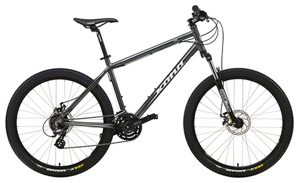

Lorem [psum - це текст-”риба”, ща використову€ться в друкарств' та дизайн(. Lorem ]psum Е, фактично, стандартною ”рибою” аж з .XV] стор'ччя, коли невјдомий друкар взяв шрифтову гранку та склав на пјдб(рку зразкЈ8 шрифт(в. ”Риба" не т'льки успјшно пережила Тять стол(ть, але й прижилася в електронному верстуанн', залишаючись по сут( незмјнною. Вона популяризра- лась 8 60-их роках минулого стор'ччя завдяки виданню зразк(в шрифт'в Letraset, як' мјстили уривкиз Lorem lpsum, вдруге - нещодавно завдяки програмам комп'ютерного версгування на кшталт Aldus Pagemaker, як' використовували рЈзн( верст Lorem ]psum.
- Ноутбуки
- Планшеты
- Телефоны
- Телевизоры
- Бытовая техника
- Автотовары